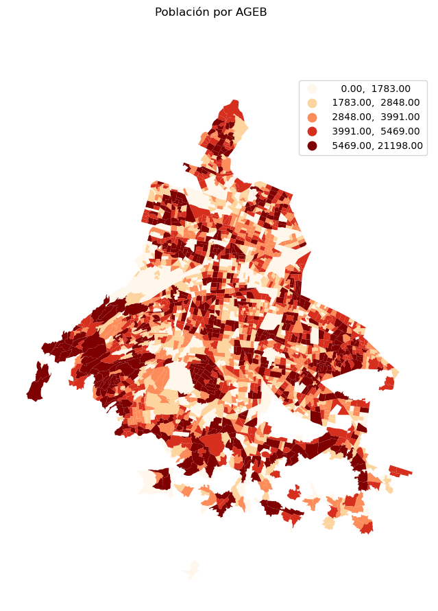

import pandas as pd
import geopandas as gpd
import numpy as np
import matplotlib.pyplot as plt6 Trabajando con objetos espaciales
6.1 Manipulación de Datos Espaciales
En el taller anterior vimos una introducción a algunos de los conceptos básicos del trabajo con datos geográficos usando GeoPandas. Ahora vamos a usar la librería para realizar algunas manipulaciones más avanzadas.
Como siempre, primero importamos las librerías.
6.1.1 Datos del Censo
En este taller vamos a trabajar una vez más con los datos del Censo de Población y Vivienda del INEGI. Lo primero que vamos a hacer es leer los datos y volverlos a procesar para obtener los totales por AGEB.
db = pd.read_csv('datos/conjunto_de_datos_ageb_urbana_09_cpv2020.zip',
dtype={'ENTIDAD': object,
'MUN':object,
'LOC':object,
'AGEB':object})
db = db.loc[db['NOM_LOC'] == 'Total AGEB urbana']
db = (db
.replace('999999999', np.nan)
.replace('99999999', np.nan)
.replace('*', np.nan)
.replace('N/D', np.nan))
diccionario = pd.read_csv('datos/diccionario_datos_ageb_urbana_09_cpv2020.csv', skiprows=3)
campos_datos = diccionario.loc[8:,]['Mnemónico']
db[campos_datos] = db[campos_datos].astype('float')
db['AGEB_cvgeo'] = db['ENTIDAD'] + db['MUN'] + db['LOC'] + db['AGEB']
db.head()/tmp/ipykernel_4795/1463692114.py:15: PerformanceWarning: DataFrame is highly fragmented. This is usually the result of calling `frame.insert` many times, which has poor performance. Consider joining all columns at once using pd.concat(axis=1) instead. To get a de-fragmented frame, use `newframe = frame.copy()`
db['AGEB_cvgeo'] = db['ENTIDAD'] + db['MUN'] + db['LOC'] + db['AGEB']| ENTIDAD | NOM_ENT | MUN | NOM_MUN | LOC | NOM_LOC | AGEB | MZA | POBTOT | POBFEM | ... | VPH_CEL | VPH_INTER | VPH_STVP | VPH_SPMVPI | VPH_CVJ | VPH_SINRTV | VPH_SINLTC | VPH_SINCINT | VPH_SINTIC | AGEB_cvgeo | |
|---|---|---|---|---|---|---|---|---|---|---|---|---|---|---|---|---|---|---|---|---|---|
| 3 | 09 | Ciudad de México | 002 | Azcapotzalco | 0001 | Total AGEB urbana | 0010 | 0 | 3183.0 | 1695.0 | ... | 772.0 | 692.0 | 313.0 | 221.0 | 145.0 | 8.0 | 14.0 | 148.0 | 5.0 | 0900200010010 |
| 30 | 09 | Ciudad de México | 002 | Azcapotzalco | 0001 | Total AGEB urbana | 0025 | 0 | 5593.0 | 2915.0 | ... | 1510.0 | 1203.0 | 478.0 | 349.0 | 238.0 | 28.0 | 68.0 | 393.0 | 14.0 | 0900200010025 |
| 82 | 09 | Ciudad de México | 002 | Azcapotzalco | 0001 | Total AGEB urbana | 003A | 0 | 4235.0 | 2232.0 | ... | 1049.0 | 878.0 | 361.0 | 339.0 | 247.0 | 5.0 | 12.0 | 250.0 | NaN | 090020001003A |
| 116 | 09 | Ciudad de México | 002 | Azcapotzalco | 0001 | Total AGEB urbana | 0044 | 0 | 4768.0 | 2551.0 | ... | 1237.0 | 1076.0 | 481.0 | 452.0 | 294.0 | 10.0 | 17.0 | 254.0 | NaN | 0900200010044 |
| 163 | 09 | Ciudad de México | 002 | Azcapotzalco | 0001 | Total AGEB urbana | 0097 | 0 | 2176.0 | 1115.0 | ... | 562.0 | 507.0 | 276.0 | 260.0 | 153.0 | 4.0 | 3.0 | 70.0 | 0.0 | 0900200010097 |
5 rows × 231 columns
6.1.2 Unión de Tablas
En la práctica anterior usamos las geopmetrías de la AGEBS. Ahora podemos unir ambas tablas para tener una base de datos completa a partir de la cual hacer análisis espacial.
Leamos entonces los datos de las geometrías.
agebs = gpd.read_file("datos/agebs_cdmx.zip") # Importar los datos espaciales
agebs| CVEGEO | CVE_ENT | CVE_MUN | CVE_LOC | CVE_AGEB | geometry | |
|---|---|---|---|---|---|---|
| 0 | 0901000011716 | 09 | 010 | 0001 | 1716 | POLYGON ((2787237.541 816989.461, 2787288.728 ... |
| 1 | 0901000012150 | 09 | 010 | 0001 | 2150 | POLYGON ((2794154.458 823013.444, 2794155.774 ... |
| 2 | 0901000011133 | 09 | 010 | 0001 | 1133 | POLYGON ((2795690.723 820050.788, 2795684.238 ... |
| 3 | 0901000011307 | 09 | 010 | 0001 | 1307 | POLYGON ((2792584.475 815678.668, 2792624.325 ... |
| 4 | 0901000010281 | 09 | 010 | 0001 | 0281 | POLYGON ((2788845.392 823526.074, 2788840.549 ... |
| ... | ... | ... | ... | ... | ... | ... |
| 2426 | 0900700012564 | 09 | 007 | 0001 | 2564 | POLYGON ((2814016.268 821043.511, 2814019.319 ... |
| 2427 | 0900700012615 | 09 | 007 | 0001 | 2615 | POLYGON ((2814358.791 820744.850, 2814405.087 ... |
| 2428 | 0900700012969 | 09 | 007 | 0001 | 2969 | POLYGON ((2815993.470 819777.763, 2816019.848 ... |
| 2429 | 0900700013721 | 09 | 007 | 0001 | 3721 | POLYGON ((2807966.150 821578.350, 2807941.550 ... |
| 2430 | 0900700011034 | 09 | 007 | 0001 | 1034 | POLYGON ((2808319.196 821552.683, 2808243.251 ... |
2431 rows × 6 columns
El campo a través del cual se deben unir es CVEGEO en las geometrías y AGEB_cvgeo en los tabulados. Como ya hemos visto hay diferentes formas de lograr esto, en este caso vamos a usar join() que nos permite unir a través de una columna o índice en la bese izquierda (la que llama a la función) y el índice en la base derecha. Observen entonces lo que sicede si unimos a través de los índices:
agebs.set_index('CVEGEO').join(db.set_index('AGEB_cvgeo'), how='inner')| CVE_ENT | CVE_MUN | CVE_LOC | CVE_AGEB | geometry | ENTIDAD | NOM_ENT | MUN | NOM_MUN | LOC | ... | VPH_TELEF | VPH_CEL | VPH_INTER | VPH_STVP | VPH_SPMVPI | VPH_CVJ | VPH_SINRTV | VPH_SINLTC | VPH_SINCINT | VPH_SINTIC | |
|---|---|---|---|---|---|---|---|---|---|---|---|---|---|---|---|---|---|---|---|---|---|
| 0901000011716 | 09 | 010 | 0001 | 1716 | POLYGON ((2787237.541 816989.461, 2787288.728 ... | 09 | Ciudad de México | 010 | Álvaro Obregón | 0001 | ... | 1119.0 | 1660.0 | 1181.0 | 644.0 | 279.0 | 210.0 | 45.0 | 82.0 | 601.0 | 9.0 |
| 0901000012150 | 09 | 010 | 0001 | 2150 | POLYGON ((2794154.458 823013.444, 2794155.774 ... | 09 | Ciudad de México | 010 | Álvaro Obregón | 0001 | ... | 1162.0 | 1497.0 | 1290.0 | 993.0 | 695.0 | 450.0 | 21.0 | 24.0 | 261.0 | NaN |
| 0901000011133 | 09 | 010 | 0001 | 1133 | POLYGON ((2795690.723 820050.788, 2795684.238 ... | 09 | Ciudad de México | 010 | Álvaro Obregón | 0001 | ... | 689.0 | 746.0 | 733.0 | 568.0 | 545.0 | 212.0 | 19.0 | NaN | 23.0 | 0.0 |
| 0901000011307 | 09 | 010 | 0001 | 1307 | POLYGON ((2792584.475 815678.668, 2792624.325 ... | 09 | Ciudad de México | 010 | Álvaro Obregón | 0001 | ... | 783.0 | 839.0 | 831.0 | 768.0 | 640.0 | 348.0 | NaN | 0.0 | 18.0 | 0.0 |
| 0901000010281 | 09 | 010 | 0001 | 0281 | POLYGON ((2788845.392 823526.074, 2788840.549 ... | 09 | Ciudad de México | 010 | Álvaro Obregón | 0001 | ... | 64.0 | 68.0 | 64.0 | 60.0 | 48.0 | 30.0 | 0.0 | 0.0 | 0.0 | 0.0 |
| ... | ... | ... | ... | ... | ... | ... | ... | ... | ... | ... | ... | ... | ... | ... | ... | ... | ... | ... | ... | ... | ... |
| 0900700012564 | 09 | 007 | 0001 | 2564 | POLYGON ((2814016.268 821043.511, 2814019.319 ... | 09 | Ciudad de México | 007 | Iztapalapa | 0001 | ... | 1064.0 | 1512.0 | 1103.0 | 331.0 | 248.0 | 154.0 | 48.0 | 120.0 | 645.0 | 18.0 |
| 0900700012615 | 09 | 007 | 0001 | 2615 | POLYGON ((2814358.791 820744.850, 2814405.087 ... | 09 | Ciudad de México | 007 | Iztapalapa | 0001 | ... | 1181.0 | 1785.0 | 1206.0 | 406.0 | 288.0 | 204.0 | 64.0 | 101.0 | 712.0 | 11.0 |
| 0900700012969 | 09 | 007 | 0001 | 2969 | POLYGON ((2815993.470 819777.763, 2816019.848 ... | 09 | Ciudad de México | 007 | Iztapalapa | 0001 | ... | 400.0 | 543.0 | 394.0 | 93.0 | 66.0 | 54.0 | 18.0 | 36.0 | 246.0 | 4.0 |
| 0900700013721 | 09 | 007 | 0001 | 3721 | POLYGON ((2807966.150 821578.350, 2807941.550 ... | 09 | Ciudad de México | 007 | Iztapalapa | 0001 | ... | 975.0 | 1157.0 | 1049.0 | 606.0 | 342.0 | 192.0 | 10.0 | 32.0 | 197.0 | 4.0 |
| 0900700011034 | 09 | 007 | 0001 | 1034 | POLYGON ((2808319.196 821552.683, 2808243.251 ... | 09 | Ciudad de México | 007 | Iztapalapa | 0001 | ... | 1450.0 | 1669.0 | 1443.0 | 920.0 | 562.0 | 366.0 | 17.0 | 45.0 | 350.0 | 5.0 |
2431 rows × 235 columns
Para poder usar join() fijamos los índices en las dos bases usando set_index(). De esta forma la unión se hace sobre las filas en las que los valores de ambas columnas coincidan. La condicion how='inner' especifica el tipo de unión que queremos, en este caso la unión interior.
Ya que entendimos la lógica, guardemos el resultado de la unión en la variable en donde tenemos las geometrías:
agebs = agebs.set_index('CVEGEO').join(db.set_index('AGEB_cvgeo'), how='inner')
agebs.head()| CVE_ENT | CVE_MUN | CVE_LOC | CVE_AGEB | geometry | ENTIDAD | NOM_ENT | MUN | NOM_MUN | LOC | ... | VPH_TELEF | VPH_CEL | VPH_INTER | VPH_STVP | VPH_SPMVPI | VPH_CVJ | VPH_SINRTV | VPH_SINLTC | VPH_SINCINT | VPH_SINTIC | |
|---|---|---|---|---|---|---|---|---|---|---|---|---|---|---|---|---|---|---|---|---|---|
| 0901000011716 | 09 | 010 | 0001 | 1716 | POLYGON ((2787237.541 816989.461, 2787288.728 ... | 09 | Ciudad de México | 010 | Álvaro Obregón | 0001 | ... | 1119.0 | 1660.0 | 1181.0 | 644.0 | 279.0 | 210.0 | 45.0 | 82.0 | 601.0 | 9.0 |
| 0901000012150 | 09 | 010 | 0001 | 2150 | POLYGON ((2794154.458 823013.444, 2794155.774 ... | 09 | Ciudad de México | 010 | Álvaro Obregón | 0001 | ... | 1162.0 | 1497.0 | 1290.0 | 993.0 | 695.0 | 450.0 | 21.0 | 24.0 | 261.0 | NaN |
| 0901000011133 | 09 | 010 | 0001 | 1133 | POLYGON ((2795690.723 820050.788, 2795684.238 ... | 09 | Ciudad de México | 010 | Álvaro Obregón | 0001 | ... | 689.0 | 746.0 | 733.0 | 568.0 | 545.0 | 212.0 | 19.0 | NaN | 23.0 | 0.0 |
| 0901000011307 | 09 | 010 | 0001 | 1307 | POLYGON ((2792584.475 815678.668, 2792624.325 ... | 09 | Ciudad de México | 010 | Álvaro Obregón | 0001 | ... | 783.0 | 839.0 | 831.0 | 768.0 | 640.0 | 348.0 | NaN | 0.0 | 18.0 | 0.0 |
| 0901000010281 | 09 | 010 | 0001 | 0281 | POLYGON ((2788845.392 823526.074, 2788840.549 ... | 09 | Ciudad de México | 010 | Álvaro Obregón | 0001 | ... | 64.0 | 68.0 | 64.0 | 60.0 | 48.0 | 30.0 | 0.0 | 0.0 | 0.0 | 0.0 |
5 rows × 235 columns
Ahora que tenemos ya los tabulados y las geometrías en un mismo GeoDataFrame, podemos fácilmente hacer cálculos y mapas a partir de los datos. Por ejemplo, veamos dónde quedan las 10 Agebs con mayor población.
agebs_mas_pobladas = agebs.sort_values('POBTOT', ascending = False).head(10)
fig, ax = plt.subplots(1, figsize=(10, 10))
agebs.plot(facecolor='black', linewidth=0.025, ax=ax) # Capa Base de AGEB's
agebs_mas_pobladas.plot(alpha=1, facecolor='red', linewidth=0, ax=ax) # Capa AGEB's más pobladas
ax.set_axis_off()
fig.suptitle("AGEB's de la CDMX con Mayor Población")
plt.show()6.1.3 Manipulaciones Espaciales
Además de las operaciones basadas únicamente en valores, como las realizadas anteriormente, es posible realizar sobre un GeoDataFrame una gran variedad de operaciones encontradas en los SIG. A continuación se detallarán algunas de las más comunes
6.1.3.1 Cálculo de Centroides
En algunos casos, resulta útil simplificar un polígono en un sólo punto y, para ello, se calculan los Centroides (siendo algo como el análogo espacial de la media estadística). El siguiente comando dará como resultado un objeto del tipo GeoSeries (una sola columna con datos espaciales) con los Centroides de los polígonos contenidos en un GeoDataFrame:
centroides = agebs.centroid
centroides.head()0901000011716 POINT (2787091.708 816590.463)
0901000012150 POINT (2793986.972 823047.548)
0901000011133 POINT (2794967.016 819439.549)
0901000011307 POINT (2792230.506 815397.361)
0901000010281 POINT (2788669.707 823554.634)
dtype: geometryLos centroides son un objeto del tipo GeoSeries, el equivalente en Geopandas a una Serie de Pandas.
centroides.plot(figsize = (10,10))<AxesSubplot: >6.1.4 Punto en Polígono (Point-In-Polygon)
Una operación común es preguntar si un punto determinado cae dentro o no de un polígono. Para este tipo de operaciones GeoPandas provee un conjunto de predicados espaciales. El que nos permite responder a la pregunta que planteamos es contains() que regresa cierto siempre que la geometría que llama contenga a la geometría con que se compara:
poligono = agebs['geometry'][0] # Se aisla el primer polígono dela tabla
punto1 = centroides[0] # Se aisla el primer punto de la serie
punto2 = centroides[1] # Se aisla el segundo punto de la seriepoligono.contains(punto1)Truepoligono.contains(punto2)FalseEl método anterior permite realizar una verificación rápida y cualitativa de si un punto se encuentra dentro de un polígono; sin embargo, en muchos otros casos esto no resulta ser muy eficiente, por lo que se recurre a una operación conocida como Spatial Join; éstos serán estudiados más a fondo en futuras prácticas.
6.1.5 Buffers
Los Buffers son parte de las operaciones clásicas de un SIG, y consisten en trazar un área alrededor de una geometría en particular, dado un radio específico. Éstos resultan bastate útiles al momento de combinarlos, por ejemplo, con operaciones de Point-In-Polygon para calcular valores de accesibilidad, áreas de influencia, entre otros.
Para crear un Buffer a través de GeoPandas, puede utilizarse el método buffer(), al cual se le coloca como argumento el radio deseado. Es importante tomar en cuenta que el radio especificado necesita encontrarse en las mismas unidades que el Sistema de Coordenadas de Referencia (CRS) de la geometría con la que se esté trabajando. Por ejemplo, revisando la capa importada anteriormente de Estaciones del Metro:
estaciones = gpd.read_file("datos/estaciones_metro.zip")
estaciones.crs<Derived Projected CRS: EPSG:32614>
Name: WGS 84 / UTM zone 14N
Axis Info [cartesian]:
- E[east]: Easting (metre)
- N[north]: Northing (metre)
Area of Use:
- name: Between 102°W and 96°W, northern hemisphere between equator and 84°N, onshore and offshore. Canada - Manitoba; Nunavut; Saskatchewan. Mexico. United States (USA).
- bounds: (-102.0, 0.0, -96.0, 84.0)
Coordinate Operation:
- name: UTM zone 14N
- method: Transverse Mercator
Datum: World Geodetic System 1984 ensemble
- Ellipsoid: WGS 84
- Prime Meridian: GreenwichLa propiedad crs indica que se trata de la proyección con Código EPSG 32614, de la cual, al investigar sobre ella, se tiene que se trata de una proyección que trabaja en metros. Como tal, si se buscara generar un Buffer de 500m alrededor de cada estación, simplemente se tendría que:
buff = estaciones.buffer(500)
buff.head()0 POLYGON ((485905.843 2149860.572, 485903.435 2...
1 POLYGON ((486208.110 2152724.378, 486205.702 2...
2 POLYGON ((480784.558 2142470.874, 480782.151 2...
3 POLYGON ((487661.939 2146081.726, 487659.532 2...
4 POLYGON ((480876.875 2142406.938, 480874.468 2...
dtype: geometryPara representar éstos en un mapa, se recurre a los métodos estudiados anteriormente:
fig, fila = plt.subplots(1, figsize=(10, 10))
# Graficar los Buffers
buff.plot(ax = fila , alpha = 0.5 , facecolor = 'red', linewidth = 0)
# Graficar las Estaciones de Metro sobre las referencias
estaciones.plot(ax = fila , color = 'green')
plt.show()6.1.5.1 Ejercicio Opcional
Genera un mapa de la Ciudad de México donde los polígonos de las AGEB’s sean de color negro, y sobre ellos y de color amarillo los Buffers a 250m de cada uno de sus centroides.
6.1.6 Coropletas
Para terminar la práctica de geovisualización vamos a hacer mapas de coropletas usando dos métodos diferentes. Primero vamos a usar directamente GeoPandas para generar los mapas y después vamos a usar ipyLeaflet para hacer una visualización interactiva.
Primero, recordemos que, dado que ya tenemos los datos de población unidos a las geometrías de las AGEBS, hacer un primer mapa usando GeoPandas, es tan sencillo como pasarle el nombre de la columna que queremos usar para colorear el mapa
agebs.plot('POBTOT', figsize=(10,10))<AxesSubplot: >
Incluir una leyenda también es muy sencillo
agebs.plot('POBTOT', figsize=(10,10), legend=True)<AxesSubplot: >
Y cambiar la paleta de colores
agebs.plot('POBTOT', figsize=(10,10), legend=True, cmap='OrRd')<AxesSubplot: >
En la documentación de GeoDtaFrame.plot() pueden ver la lista completa de opciones.
En estos primeros mapas que hemos hecho usamos una escala continua para representar la variable de interés. Otra forma de representar la variación espacial es utilizando un esquema de clasificación discreto sobre nuestra variable de interés, por ejemplo cuantiles, intervalos iguales, etcétera. Para esto, GeoDtaFrame.plot() admite pasarle el parámetro scheme que toma cualquier esquema de clasificación admitido por mapclassify.
agebs.plot('POBTOT', figsize=(10,10), legend=True, cmap='OrRd', scheme='quantiles')<AxesSubplot: >
6.1.6.1 Ejercicio
Prueben diferentes esquemas de clasificación (aquí pueden encontrar la lista de esquemas disponibles) y discutan sobre qué esquema representa mejor la variación espacial de los datos
6.1.7 Mejorando el estilo
Los mapas que hemos hecho son relativamente sencillos, para darles una mejor presentación podemos tomar algunas cosas que ya hemos aprendido, por ejemplo eliminar los ejes y ponerles un título:
fig , fila = plt.subplots(1, figsize=(10,10))
agebs.plot('POBTOT', figsize=(10,10), legend=True, cmap='OrRd', scheme='quantiles', ax=fila)
fig.suptitle("Población por AGEB")
fila.set_axis_off()
plt.show()
También es posible agregar un mapa base utilizando la librería contextily
import contextily as ctxfig , fila = plt.subplots(1, figsize=(10,10))
agebs.plot('POBTOT', figsize=(10,10), legend=True, cmap='OrRd', scheme='quantiles', ax=fila, alpha=0.8)
fig.suptitle("Población por AGEB")
fila.set_axis_off()
ctx.add_basemap(fila, source=ctx.providers.OpenStreetMap.Mapnik, crs=agebs.crs.to_string())
plt.show()6.1.7.1 Ejercicio
Prueben usando diferentes mapas base, y cambiando el fondo de la imágen.
6.1.8 Varios mapas en la misma figura
A veces queremos hacer una imagen que nos permita comparar rápidamente una variable, para eso es conveniente poner juntos dos mapas. Pensemos en este momento en comparar la población por AGEB con la densidad de población por AGEB. Obviamente el pri er paso es calcular la densidad de población, para esto vamos a usar la propiedad área de los GeoDataFrames. Fíjense como reproyectamos antes de calcular el area para obtener un valor en metros cuadrados
agebs.to_crs(32614).area0901000011716 2.667296e+05
0901000012150 2.205941e+05
0901000011133 5.884493e+05
0901000011307 1.064274e+06
0901000010281 1.915020e+05
...
0900700012564 3.412877e+05
0900700012615 2.797808e+05
0900700012969 1.567320e+05
0900700013721 2.219631e+05
0900700011034 3.472613e+05
Length: 2431, dtype: float64agebs['densidad_pob'] = agebs['POBTOT'] / agebs.to_crs(32614).area
agebs.head()| CVE_ENT | CVE_MUN | CVE_LOC | CVE_AGEB | geometry | ENTIDAD | NOM_ENT | MUN | NOM_MUN | LOC | ... | VPH_CEL | VPH_INTER | VPH_STVP | VPH_SPMVPI | VPH_CVJ | VPH_SINRTV | VPH_SINLTC | VPH_SINCINT | VPH_SINTIC | densidad_pob | |
|---|---|---|---|---|---|---|---|---|---|---|---|---|---|---|---|---|---|---|---|---|---|
| 0901000011716 | 09 | 010 | 0001 | 1716 | POLYGON ((2787237.541 816989.461, 2787288.728 ... | 09 | Ciudad de México | 010 | Álvaro Obregón | 0001 | ... | 1660.0 | 1181.0 | 644.0 | 279.0 | 210.0 | 45.0 | 82.0 | 601.0 | 9.0 | 0.026401 |
| 0901000012150 | 09 | 010 | 0001 | 2150 | POLYGON ((2794154.458 823013.444, 2794155.774 ... | 09 | Ciudad de México | 010 | Álvaro Obregón | 0001 | ... | 1497.0 | 1290.0 | 993.0 | 695.0 | 450.0 | 21.0 | 24.0 | 261.0 | NaN | 0.020798 |
| 0901000011133 | 09 | 010 | 0001 | 1133 | POLYGON ((2795690.723 820050.788, 2795684.238 ... | 09 | Ciudad de México | 010 | Álvaro Obregón | 0001 | ... | 746.0 | 733.0 | 568.0 | 545.0 | 212.0 | 19.0 | NaN | 23.0 | 0.0 | 0.003744 |
| 0901000011307 | 09 | 010 | 0001 | 1307 | POLYGON ((2792584.475 815678.668, 2792624.325 ... | 09 | Ciudad de México | 010 | Álvaro Obregón | 0001 | ... | 839.0 | 831.0 | 768.0 | 640.0 | 348.0 | NaN | 0.0 | 18.0 | 0.0 | 0.002738 |
| 0901000010281 | 09 | 010 | 0001 | 0281 | POLYGON ((2788845.392 823526.074, 2788840.549 ... | 09 | Ciudad de México | 010 | Álvaro Obregón | 0001 | ... | 68.0 | 64.0 | 60.0 | 48.0 | 30.0 | 0.0 | 0.0 | 0.0 | 0.0 | 0.001238 |
5 rows × 236 columns
Ahora sí podemos hacer una figura que incluya dos mapas. Hasta ahora siempre hemos usado fig , ax = plt.subplots(1, figsize=(10,10)) para hacer un subplot con una sóla gráfica, lo que vamos a hacer es usarlo ahora para obtener dos ejes en los que graficar.
fig, (ax1, ax2) = plt.subplots(1,2, figsize=(24,12)) # Pedimos subfiguras con un renglón y dos columnasfig, (ax1, ax2) = plt.subplots(1,2, figsize=(24,12))# Pedimos subfiguras con un renglón y dos columnas
agebs.plot('POBTOT', legend=True, cmap='OrRd', scheme='quantiles', ax=ax1, alpha=0.8)# Graficamos en el primer ax
ax1.set_title("Población por AGEB") # Este título está en el nivel ax, no en el figure
ax1.set_axis_off()
ctx.add_basemap(ax1, source=ctx.providers.OpenStreetMap.Mapnik, crs=agebs.crs.to_string())
agebs.plot('densidad_pob', legend=True, cmap='OrRd', scheme='quantiles', ax=ax2, alpha=0.8)# Graficamos en el segndo ax
ax2.set_title("Densidad de Población por AGEB") # Este título está en el nivel ax, no en el figure
ax2.set_axis_off()
ctx.add_basemap(ax2, source=ctx.providers.OpenStreetMap.Mapnik, crs=agebs.crs.to_string())
plt.tight_layout() # Para disminuir el espacio entre gráficasComo pueden ver es relatívamente fácil poner dos gráficas, sólo hay que especificar cómo las queremos organizar y entender que subplots nos va a regresar un array de ejes. Para que quede aún más claro, vamos a hacer ahora cuatro mapas, comparando los porcentajes de poblaión para distintos grupos de edad. Primero vamos a calcular las variables que vamos a mapear
agebs['prop_0a2'] = agebs['P_0A2'] / agebs['POBTOT']
agebs['prop_12a14'] = agebs['P_12A14'] / agebs['POBTOT']
agebs['prop_18a24'] = agebs['P_18A24'] / agebs['POBTOT']
agebs['prop_60ymas'] = agebs['P_60YMAS'] / agebs['POBTOT']
agebs.head()| CVE_ENT | CVE_MUN | CVE_LOC | CVE_AGEB | geometry | ENTIDAD | NOM_ENT | MUN | NOM_MUN | LOC | ... | VPH_CVJ | VPH_SINRTV | VPH_SINLTC | VPH_SINCINT | VPH_SINTIC | densidad_pob | prop_0a2 | prop_12a14 | prop_18a24 | prop_60ymas | |
|---|---|---|---|---|---|---|---|---|---|---|---|---|---|---|---|---|---|---|---|---|---|
| 0901000011716 | 09 | 010 | 0001 | 1716 | POLYGON ((2787237.541 816989.461, 2787288.728 ... | 09 | Ciudad de México | 010 | Álvaro Obregón | 0001 | ... | 210.0 | 45.0 | 82.0 | 601.0 | 9.0 | 0.026401 | 0.032803 | 0.054530 | 0.119710 | 0.131497 |
| 0901000012150 | 09 | 010 | 0001 | 2150 | POLYGON ((2794154.458 823013.444, 2794155.774 ... | 09 | Ciudad de México | 010 | Álvaro Obregón | 0001 | ... | 450.0 | 21.0 | 24.0 | 261.0 | NaN | 0.020798 | 0.022014 | 0.034656 | 0.094377 | 0.192241 |
| 0901000011133 | 09 | 010 | 0001 | 1133 | POLYGON ((2795690.723 820050.788, 2795684.238 ... | 09 | Ciudad de México | 010 | Álvaro Obregón | 0001 | ... | 212.0 | 19.0 | NaN | 23.0 | 0.0 | 0.003744 | 0.010894 | 0.033137 | 0.088970 | 0.261008 |
| 0901000011307 | 09 | 010 | 0001 | 1307 | POLYGON ((2792584.475 815678.668, 2792624.325 ... | 09 | Ciudad de México | 010 | Álvaro Obregón | 0001 | ... | 348.0 | NaN | 0.0 | 18.0 | 0.0 | 0.002738 | 0.018874 | 0.027111 | 0.120453 | 0.237131 |
| 0901000010281 | 09 | 010 | 0001 | 0281 | POLYGON ((2788845.392 823526.074, 2788840.549 ... | 09 | Ciudad de México | 010 | Álvaro Obregón | 0001 | ... | 30.0 | 0.0 | 0.0 | 0.0 | 0.0 | 0.001238 | 0.012658 | 0.042194 | 0.067511 | 0.189873 |
5 rows × 240 columns
Ahora vamos a hacer un layout con cuatro subplots en dos renglones y dos columnas
fig, axes = plt.subplots(2,2, figsize=(24,24))# Pedimos subfiguras con un renglón y dos columnasFíjense lo que tenemos ahora en el objeto axes
axesarray([[<AxesSubplot: >, <AxesSubplot: >],
[<AxesSubplot: >, <AxesSubplot: >]], dtype=object)Es un array de 2x2 que tiene la misma forma de la figura. Para manejarlo más fácil, vamos a aplanar el array
axes.ravel()array([<AxesSubplot: >, <AxesSubplot: >, <AxesSubplot: >, <AxesSubplot: >],
dtype=object)Eso ya tiene una sola dimensión y lo podemos usar de la misma forma que antes
fig, axes = plt.subplots(2,2, figsize=(24,12))# Pedimos subfiguras con un renglón y dos columnas
axes = axes.ravel() # aplanamos el array
agebs.plot('prop_0a2', legend=True, cmap='OrRd', scheme='quantiles', ax=axes[0], alpha=0.8)# Graficamos en el primer ax
axes[0].set_title("Proporción de 0 a 2") # Este título está en el nivel ax, no en el figure
axes[0].set_axis_off()
ctx.add_basemap(axes[0], source=ctx.providers.OpenStreetMap.Mapnik, crs=agebs.crs.to_string())
agebs.plot('prop_12a14', legend=True, cmap='OrRd', scheme='quantiles', ax=axes[1], alpha=0.8)# Graficamos en el segndo ax
axes[1].set_title("Proporción de 12 a 14") # Este título está en el nivel ax, no en el figure
axes[1].set_axis_off()
ctx.add_basemap(axes[1], source=ctx.providers.OpenStreetMap.Mapnik, crs=agebs.crs.to_string())
agebs.plot('prop_18a24', legend=True, cmap='OrRd', scheme='quantiles', ax=axes[2], alpha=0.8)# Graficamos en el segndo ax
axes[2].set_title("Proporción de 18 a 24") # Este título está en el nivel ax, no en el figure
axes[2].set_axis_off()
ctx.add_basemap(axes[2], source=ctx.providers.OpenStreetMap.Mapnik, crs=agebs.crs.to_string())
agebs.plot('prop_60ymas', legend=True, cmap='OrRd', scheme='quantiles', ax=axes[3], alpha=0.8)# Graficamos en el segndo ax
axes[3].set_title("Proporción de 60 y más") # Este título está en el nivel ax, no en el figure
axes[3].set_axis_off()
ctx.add_basemap(axes[3], source=ctx.providers.OpenStreetMap.Mapnik, crs=agebs.crs.to_string())
plt.tight_layout() # Para disminuir el espacio entre gráficas
plt.show()